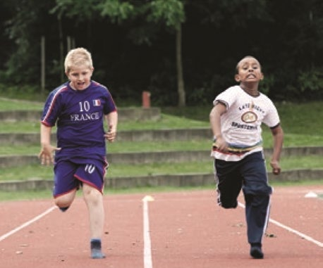
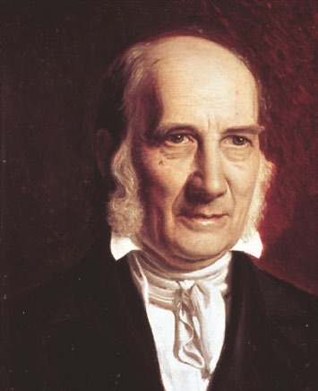
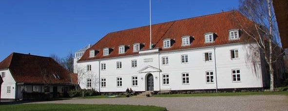
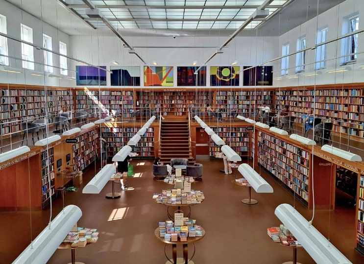
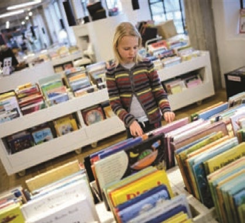

Fakta-ark 8: Forenings-
Áudio
sidde 46
Fakta-ark 8: Foreningsog fritidsliv
Læremateriale Til Medborgerskabsprøven
sidde 47
I Danmark er der en lang tradition for at danne foreninger. Her mødes menne sker om fælles interesser eller mål. Foreningerne er med til at skabe sociale fællesskaber i det danske samfund. Her mødes nemlig ofte mennesker med forskellig baggrund*. Dvs., at der her kommer mennesker fra forskellige sociale lag*, med forskellige politiske holdninger og forskellig etnisk baggrund.
Læremateriale Til Medborgerskabsprøven Fakta-Ark 8: Forenings- Og Fritidsliv
Dette fakta-ark handler om: • Foreningslivet i Danmark • Idrætsforeninger • Frivilligt socialt arbejde • Aftenskoler • Højskoler • Biblioteker
Foreningslivet I Danmark
I Danmark er en meget stor del af befolkningen medlem af en forening. Faktisk er de fleste af borgerne i Danmark medlem af mindst én forening. Alle har ret til at danne en forening i Danmark.
Myndighederne* skal altså ikke først godkende* en forening, som borgerne ønsker at danne. Det gælder også for udlændinge. Retten til at danne en forening hænger sammen med forenings-, forsamlings- og ytringsfriheden. Det står i grundloven, at alle i Danmark har ret til at forsamles og ytre sig i det offentlige rum på lovlig vis.
Der findes mange foreninger, organisationer og klubber i Danmark, hvor medlemmerne mødes omkring fælles interesser og aktiviteter. Der findes fx idrætsforeninger, boligforeninger, kunstforeninger, musikforeninger, indvand rerforeninger, religiøse foreninger og foreninger for folk med en særlig hobby.
Der er også foreninger, der arbejder for at forbedre forholdene for bestemte grupper, fx mennesker med handicap, forskellige patientgrupper, ældre eller homoseksuelle. Der findes også foreninger, der arbejder for en bestemt politisk sag, fx miljø eller dyrevelfærd*. Og ud over foreninger findes der også møde steder, klubber og kulturhuse, som ofte er knyttet til et boligområde. Her spiller folk fx kort, diskuterer, dyrker en fritidsinteresse eller lytter til foredrag.
Mange borgere er medlem af en forening, fordi de har en interesse, de gerne vil dyrke, og fordi de gerne vil dyrke denne interesse sammen med andre menne sker. Foreninger giver altså en god mulighed for at lære andre at kende og danne sociale relationer* og netværk. Det kan også have betydning for beskæftigelses mulighederne. Mange mennesker får job gennem deres netværk, og foreninger kan være et godt sted at danne netværk.

sidde 48
Mange af foreningerne er baseret på frivilligt arbejde. At være frivillig betyder, at medlemmer af foreningen eller andre udfører arbejde for foreningen uden at få løn for det. I Danmark udfører mange regelmæssigt frivilligt arbejde. Foreningernes økonomiske indtægter stammer blandt andet fra medlemmernes kontingent*, offentlige tilskud og private aktører såsom fonde og virksomheder.
Læremateriale Til Medborgerskabsprøven Fakta-Ark 8: Forenings- Og Fritidsliv
I dag foregår en del af forenings- og fritidslivet også digitalt. Mange danskere mødes i onlinefællesskaber på internettet og sociale medier for at dele fælles interesser, debattere eller organisere frivilligt arbejde uden at mødes fysisk.
Foreninger For Børn Og Unge
Mange børn og unge er aktive i foreninger i deres fritid. Der findes en lang række foreninger, der henvender sig til børn og unge. Fx findes der foreninger, hvor man kan være spejder, og foreninger hvor man kan spille teater. Der er også idrætsforeninger, hvor børnene kan gå til fodbold, håndbold, ridning, tennis, badminton, svømning, boksning, karate eller gymnastik. Børnene mødes ofte en eller to gange om ugen til træning. Mange foreninger deltager også i turneringer, hvor der bliver arrangeret kampe mod andre foreninger. Her spiller fx fodbold holdene i de nærliggende kommuner mod hinanden. Sådanne kampe spilles normalt i en weekend.
Det er almindeligt, at forældrene skal betale et kontingent* til foreningen, for at barnet kan være medlem. Kontingentet skal være med til at dække de udgifter, som foreningen har til fx spilletrøjer eller redskaber. Mange forældre deltager også aktivt i de foreninger, deres børn går i. De kan fx være trænere, hjælpere eller hente og bringe børn til de forskel lige arrangementer. Forældrenes opbakning og støtte er vigtig for livet i foreningen, fordi de er afhængige af frivilligt arbejde.
De fleste idrætsforeninger har også aktiviteter for voksne. Her kan alle borgere dyrke deres interesse for sport og idræt. Man skal normalt betale kontingent. Idrætsforeninger er meget udbredte i hele landet.
Der findes idrætsforeninger for store og populære sportsgrene som fx fodbold, håndbold, badminton og gymnastik. Og der findes foreninger for mindre idræts grene som fx dans, ridning og sejlsport. I den enkelte kommune findes der over sigter over, hvilke idrætsforeninger der findes lokalt.
sidde 49
Frivilligt Socialt Arbejde
Læremateriale Til Medborgerskabsprøven Fakta-Ark 8: Forenings- Og Fritidsliv
Man kan også være frivillig i en forening, der laver socialt, sundhedsmæssigt eller humanitært arbejde. Det er foreninger, der hjælper andre mennesker, der har brug for støtte.
Eksempler på frivilligt socialt arbejde kan være:
- Lektiecaféer, hvor man hjælper skolebørn med lektierne
- Venskabsfamilier, hvor én familie hjælper en anden familie, der har behov for støtte, fx i forbindelse med børnenes skolegang eller pasning af børnene m.m.
- Mentorordninger, hvor man som mentor giver gode råd til fx en studerende, som har behov for støtte og vejledning til at klare uddannelsen
- Væresteder, hvor man kan hjælpe til, så fx hjemløse kan komme og få et måltid mad eller en kop kaffe
- Besøgsvennetjenester, hvor ældre mennesker der er ensomme, får besøg af en frivillig besøgsven
- Forskellige rådgivningsaktiviteter, fx telefonlinjer som BørneTelefonen, som børn og unge med problemer kan ringe til, og Livslinjen, der rådgiver menne sker med selvmordstanker
Aftenskoler
Mange borgere i Danmark går på aftenskoler, hvor man kan få undervisning i mange forskellige emner. Udgangspunktet for undervisningen er at give almen og faglig indsigt og styrke den enkeltes evne til at tage ansvar for sit eget liv og deltage aktivt i samfundslivet. Der er derfor heller ikke eksamen på aften skoler. Man skal betale for at gå på aftenskole. Man kan fx få undervisning i sprog, matematik, geografi eller historie. Undervisningen kan også handle om børneopdragelse eller kulturelle emner. Der er også undervisning i gymnastik, madlavning, syning, maling, sang og meget andet. Mange aftenskoler har også særlige tilbud til folk, der kommer fra andre lande.
Det er som regel oplysningsforbund, der står for de forskellige aftenskoletilbud. Det kan fx være:
- AOF, Arbejdernes Oplysningsforbund
- LOF, Liberalt Oplysningsforbund
- FOF, Folkeligt Oplysningsforbund
- DOF, Dansk Oplysnings Forbund
- FORA


sidde 50
Højskoler
Læremateriale Til Medborgerskabsprøven Fakta-Ark 8: Forenings- Og Fritidsliv
Højskolen er en del af den danske tradition for, at alle borgere livet igennem skal have mulighed for at lære og få viden om samfundet. Der er omkring 70 forskel lige højskoler i Danmark. På en højskole er der fokus på at udvikle sig fagligt og personligt og samtidig lære nye mennesker at kende.
Højskolerne tilbyder kurser i fx filosofi, religion, kunst, litteratur, sport og politik. Der er både korte og lange kurser på højskolerne. De korte kurser varer omkring en uge og ligger ofte i sommerferien. Det kan være kurser, hvor man snakker om litteratur, kunst eller musik, eller hvor man maler og tegner. De lange kurser varer som regel mellem tre og fem måneder. Der er også nogle – især unge mennesker – der bruger et højskoleophold til at finde ud af, hvilken videregå ende uddannelse han eller hun vil vælge. Ud over undervisningen er der også mange andre aktiviteter, som fx udflugter og rejser. Man bor normalt på højskolen under sit ophold. Man skal betale for et højskoleophold, men der er forskellige muligheder for at få økonomisk støtte til opholdet.
N.F.S Grundtvig.Rødding Højs
Han mente, det var vigtigt, at børn og voksne lærte at tænke selv. De skulle ikke bare lære det, der stod i bøgerne, udenad. Undervisningen skulle gøre eleverne personligt engagerede i det, de læste. De skulle lære for deres egen skyld og ikke kun for at få gode karakterer. Man går derfor heller ikke til eksamen på en højskole.N.F.S Grundtvig.
Højskolen er bl.a. inspireret af Nikolai Frederik Severin Grundtvig (17831872), som var en dansk digter og præst. Hans ideer om skole og læring fik stor betydning for bl.a. udviklingen af højskoler i Danmark. Grundtvig så undervisning for alle som en måde at skabe demokrati på i samfundet.
Rødding Højskole.


sidde 51
Biblioteker
Læremateriale Til Medborgerskabsprøven Fakta-Ark 8: Forenings- Og Fritidsliv
Der er folkebiblioteker i alle kommuner. De er et tilbud til alle borgere. Her kan man gratis låne bøger, magasiner, musik, film og computerspil.
Hvis man vil låne noget, skal man enten bruge sit sundhedskort eller et lånerkort, man kan få på biblioteket. De fleste mate rialer er på dansk, men man kan også låne bøger og spil på andre sprog. Hvis ens lokale bibliotek ikke har de mate rialer, man har brug for, kan biblioteket som regel bestille dem hjem fra et andet bibliotek. Desuden har bibliotekerne en række online-tjenester, som er gratis for borgerne. Det gælder fx 'eReolen' eller 'Filmstriben', hvor borgerne kan låne og streame* lydbøger, e-bøger, podcasts, film og tv-serier hjemmefra.
Mange biblioteker har lektiecaféer, hvor frivillige, fx pensionerede lærere eller studerende, kommer og hjælper børnene med at læse lektier. Bibliotekerne arrangerer udstillinger, viser film og børneteater og inviterer til foredrag.Frederiksberg Bibliotek.
Der er gratis adgang til computere og internet, man kan læse dagens aviser, og man kan få hjælp til at finde bestemte informationer eller materialer. På biblio tekerne ligger der også mange nyttige pjecer fra organisationer og offentlige myndigheder om fx sundhed eller nye skatteregler.
Frederiksberg Bibliotek. Foto: Tue Schou Pedersen.
Fonte: Læremateriale til Medborgerskabsprøven, SIRI.